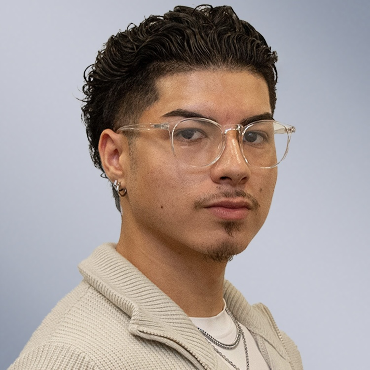

Curious first. Confident after.
I built my marketing foundation in insurance. Now I'm bringing that rigor to brands where self-expression is at the core of the stories I tell.

Greetings! I'm James Hobbs, a marketing student at Widener University and a marketer by way of Gateway Specialty Insurance and USLI.
I built my marketing foundation in insurance. I started in customer service, preparing quotes for agents, and six months later became the first student at Gateway Specialty fully dedicated to marketing. Nobody handed me that path. I said yes to every opportunity, learned from all the resources I had access to, and let the work make the case. I taught myself video with a phone and a rigged podium, pitched a company president on a tool I found on LinkedIn, and watched Gateway Specialty adopt all of it.
Outside of school and work, I'm obsessed with doing it all in style and on beat. A good outfit and the right tunes keep me grounded, curious, and, above all, confident.
james kauilani hobbs
Four habits that show up in every project, with the proof behind each.
31%
LinkedIn follower growth
content strategy · copywriting · short-form video
I own LinkedIn content strategy, and followers grew 31%. When we switched to real video footage, engagement rose from 6.1% to 9.4%.
432%
more engagement on employee posts
A/B testing · market research · competitive analysis
Testing showed Saturday posts earn 81% higher engagement than weekday posts, and posts featuring real employees earn 432% more than standard product content.
250+
ad campaigns optimized
SEO & AEO · Google Ads & Microsoft Advertising · HubSpot AEO
I proposed HubSpot AEO, and Gateway Specialty adopted it. I optimize Google and Bing Ads across 250+ campaigns to lower cost per click and cut wasted spend.
1 page
replaced a multi-page PDF
graphic design in Canva and Copilot · video editing in CapCut and Descript · HTML · GitHub · Claude
I came up with a single-page quote tool and built it, and every client we send it to now uses it.
my role · Chose the clips and edited them.
01 · problem
Gateway Specialty's first scripted video series, a "meet the team" introduction to the company's product directors, was fully produced and then shelved. Leadership only realized, after seeing the finished product, that there was no clear strategy behind it.
02 · solution
Rather than abandon video, the team pivoted to a lower-risk approach: repurposing existing webinar recordings into short, publishable clips. I chose which moments to clip and edited each one in Descript, cleaning up the audio and applying consistent branding so it was ready to publish.
03 · outcome
The pivot worked. The earliest clips used an audio/waveform format and averaged 6.1% engagement. Once we shifted to actual video footage, engagement rose to 9.4%. Comparing this against Gateway Specialty's employee culture videos (16.4% average) revealed a sharper pattern: content built around real people and candid moments consistently outperforms purely informational content, and it is now shaping our plan for future video content.
my role · Researched and proposed HubSpot AEO and the Instagram launch; own LinkedIn content strategy.
01 · problem
Gateway Specialty had minimal digital visibility beyond a basic company presence, and buyer research was shifting toward AI platforms (ChatGPT, Gemini, Perplexity) rather than traditional search, a shift most of the industry, including Gateway Specialty, hadn't caught up to.
02 · solution
I connected a trend I noticed on LinkedIn to a shift already visible in Gateway Specialty's own submission data, researched HubSpot's AEO product, and built the business case. I paired it with a second initiative, launching Gateway Specialty's first Instagram presence. Separately, I took ownership of LinkedIn content strategy, documented a process for the team to reference, and ran A/B tests on posting days and content types.
03 · outcome
Gateway Specialty purchased HubSpot AEO following my proposal. The team now uses it to track AI visibility, prompts, citations, and competitive share of voice, and those insights shaped our LinkedIn strategy and the Instagram launch on October 1. On LinkedIn, followers grew from 2,261 to 2,965, a 31% increase under my ownership, after a slower growth rate before. Testing showed Saturday posts earn 81% higher engagement than weekday posts, and posts featuring real employees earn 432% more than standard product content. I also researched TikTok as a future channel and pitched it to our VP. It's still in the idea phase.
31%
LinkedIn follower growth, 2,261 to 2,965
81%
higher engagement on Saturday posts
432%
higher engagement on employee posts
my role · Came up with the idea and built it.
01 · problem
Clients requesting an insurance quote had to work through multi-page PDF postcards, materials that were clunky to read and act on quickly.
02 · solution
I came up with the idea of consolidating the multi-page PDF content into a single-page HTML document that clients could act on in one place. I taught myself GitHub to build it and used Claude to write the page, then readied it for client distribution.
03 · outcome
Every client we send it to now uses it. Clients and the internal team have both responded well to how much simpler requesting a quote has become.